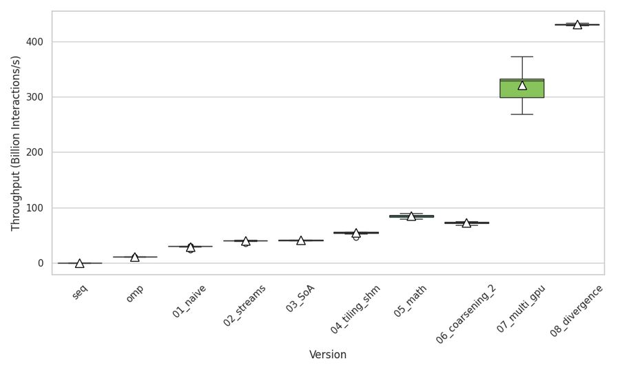
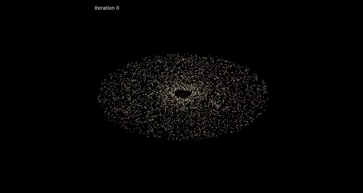
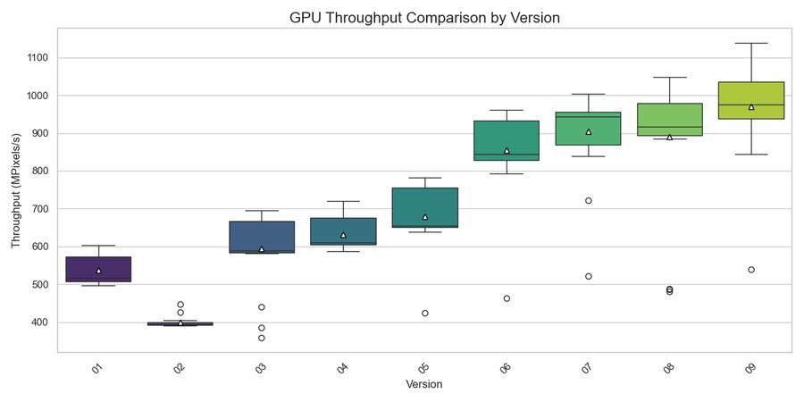
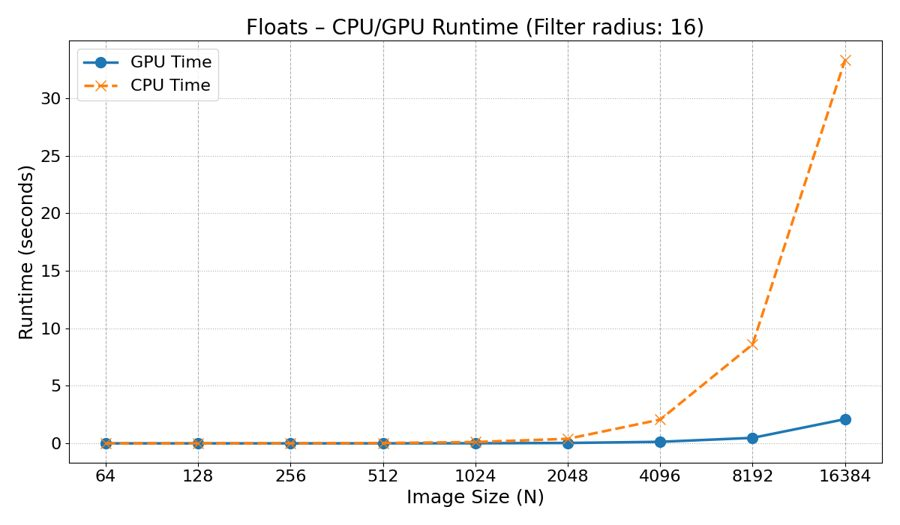

Projects / ECE415
High Performance Computing
Five projects that build on each other, from tuning C code on one CPU to running a galaxy simulation on four GPUs at once.
Project 5 of 5
N-body on GPUs
2,910× faster than the single-core version


A galaxy simulation where every body pulls on every other body. We started from a single-core C program and made it faster step by step, ending on four NVIDIA Tesla K80 GPUs at once.
Each step was measured against the one before, so every change had to earn its place.
- OpenMP on the CPU: 72×
- A first, naive GPU version: 197×
- Shared-memory tiling: 369×
- Read-only cache and fused multiply-add: 571×
- Spread over four GPUs: 2,175×
- Removing branch divergence: 2,910×
From 293.3 s to 0.0997 s for the same run: 2,910× faster than the sequential CPU code and 40× faster than the OpenMP version.
Measured on a server with four NVIDIA Tesla K80 GPUs.
__shared__ float shX[BLOCK_SIZE], shY[BLOCK_SIZE], shZ[BLOCK_SIZE];
int num_tiles = n_padded / BLOCK_SIZE;
#pragma unroll 2
for (int tile = 0; tile < num_tiles; tile++) {
int j_local = threadIdx.x;
shX[j_local] = __ldg(&soa.x[system_offset + tile * BLOCK_SIZE + j_local]);
shY[j_local] = __ldg(&soa.y[system_offset + tile * BLOCK_SIZE + j_local]);
shZ[j_local] = __ldg(&soa.z[system_offset + tile * BLOCK_SIZE + j_local]);
__syncthreads();
#pragma unroll 8
for (int j = 0; j < BLOCK_SIZE; j++) {
float jX = shX[j]; float jY = shY[j]; float jZ = shZ[j];
float dx1 = shX[j] - myX1; float dy1 = shY[j] - myY1; float dz1 = shZ[j] - myZ1;
float d2_1 = fmaf(dx1, dx1, fmaf(dy1, dy1, fmaf(dz1, dz1, SOFTENING)));
float inv1 = rsqrtf(d2_1); float inv3_1 = inv1 * inv1 * inv1;
Fx1 = fmaf(dx1, inv3_1, Fx1); Fy1 = fmaf(dy1, inv3_1, Fy1); Fz1 = fmaf(dz1, inv3_1, Fz1);
// ... the same for bodies 2, 3 and 4
}
__syncthreads();
}
The force kernel: each block loads a tile of bodies into shared memory once, then every thread reuses it for its own bodies.
PDF. A cleaned copy, without student IDs or other students' names.

Contrast enhancement that works tile by tile, moved to the GPU and tuned version by version.
The steps, each with what it changed.
1,334 megapixels per second on a Tesla K80, about 24× the CPU version.
A short excerpt from the CLAHE kernel goes here, with a link to the file on GitHub.
PDF. A cleaned copy, without student IDs or other students' names.

Image filtering with a 2D convolution, moved from the CPU to an NVIDIA Tesla K80.
The steps, each with what it changed.
Up to 16.97× faster than the CPU version, on a Tesla K80.
A short excerpt from the convolution kernel goes here, with a link to the file on GitHub.
PDF. A cleaned copy, without student IDs or other students' names.
Clustering parallelised with OpenMP.
The steps, each with what it changed.
17.31× faster with 56 threads.
A short excerpt from the parallel loop goes here, with a link to the file on GitHub.
PDF. A cleaned copy, without student IDs or other students' names.
Edge detection on a 4096×4096 image, tuned step by step on an Intel Core i5-1235U.
The steps, each with what it changed.
21.49× faster than the original C code.
A short excerpt from the inner loop goes here, with a link to the file on GitHub.
PDF. A cleaned copy, without student IDs or other students' names.
Tools
What this course's projects were built with. Pick one to see every project that uses it.